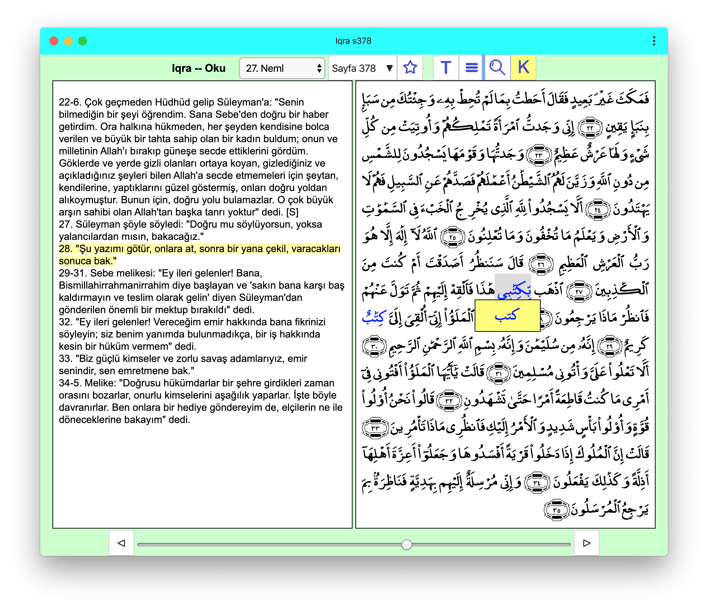
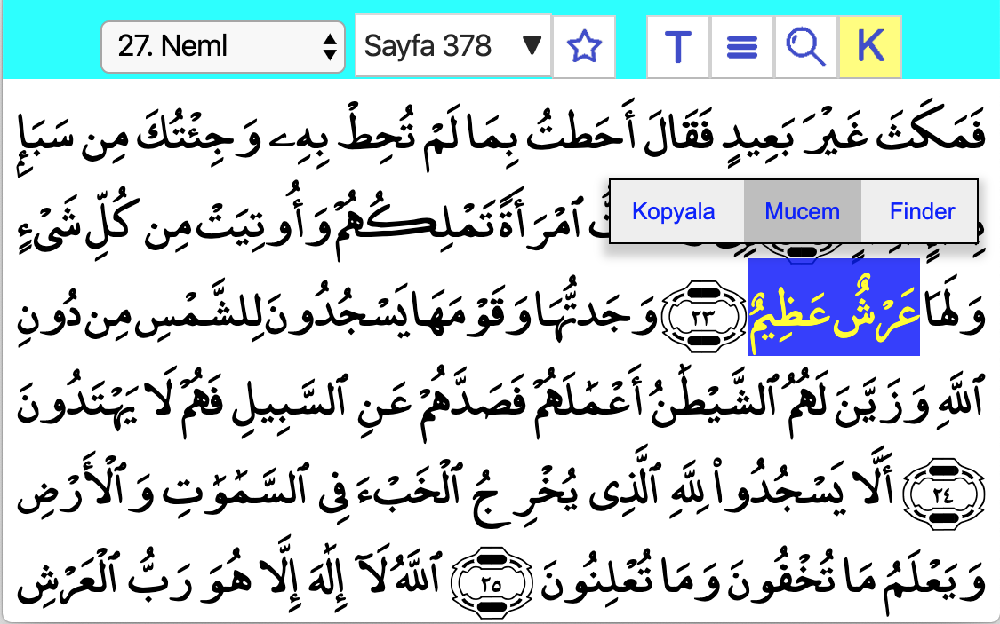
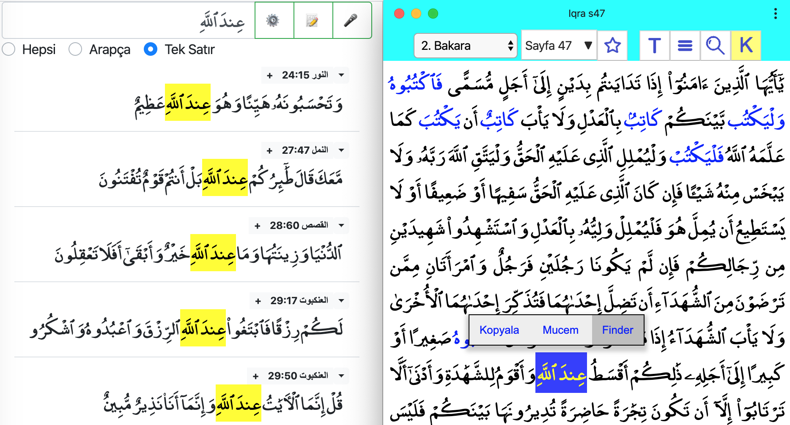
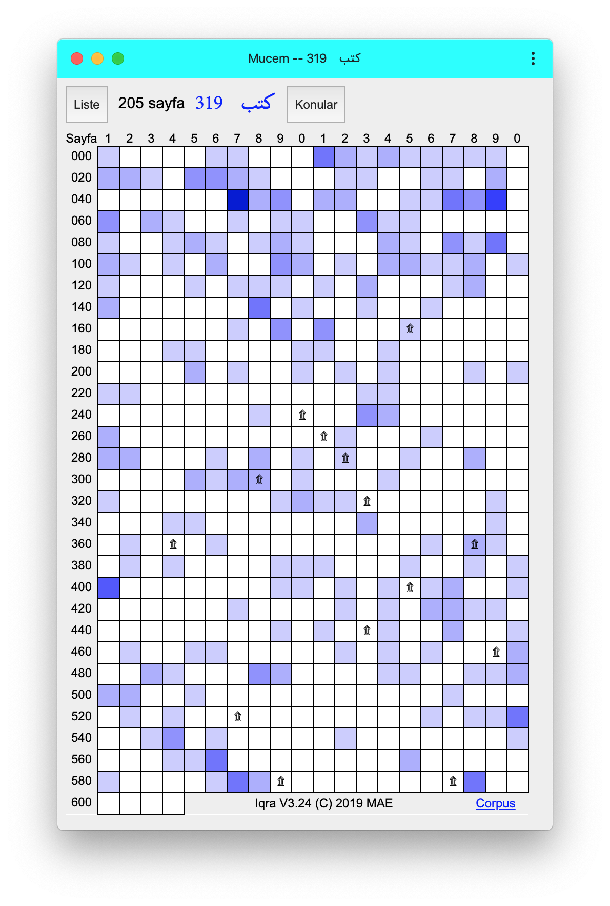
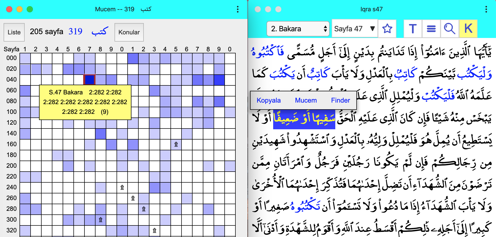
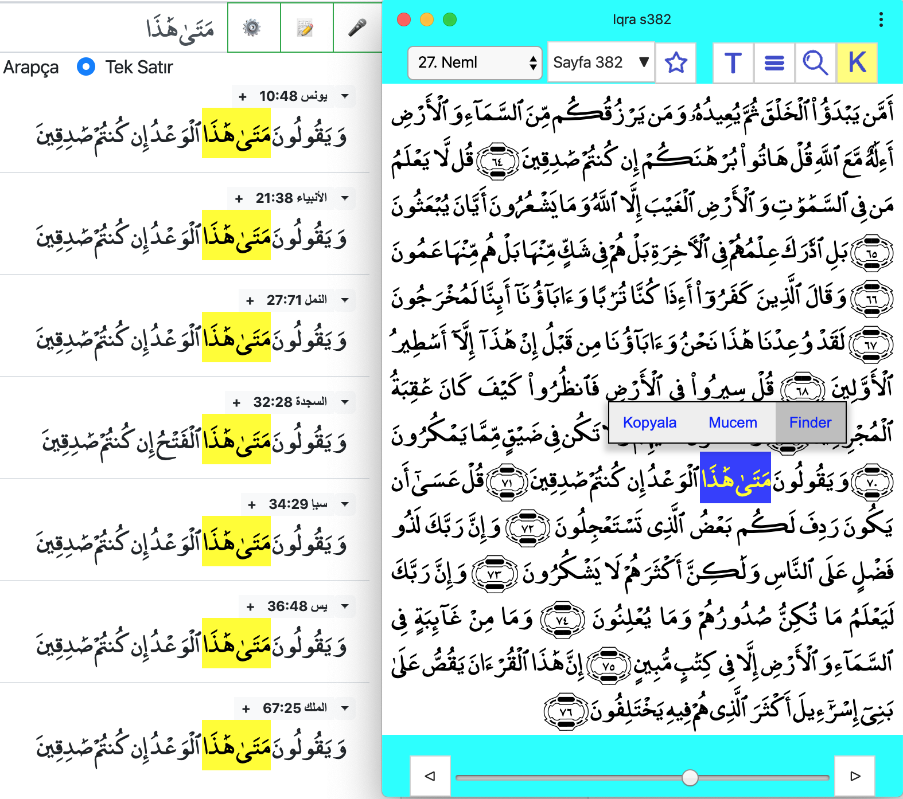

Iqra, Kerim Kitabımız Kuran’ı okumak için yapılan yüzlerce yazılımdan biridir.
Yazılımın başlangıç linki: reader.html
Ekran yeteri kadar geniş ise hem Kuran sayfası hem de meali görünür. Sayfa açılınca, sonraki ya da önceki sayfaya geçmek, başka bir sure ya da sayfa numarası vermek mümkün. Sağ üstte görünen tuşların anlamı:
Yazılımın en önemli özelliği bu olduğu için, K tuşunun sürekli seçili olmasını tavsiye ediyoruz.
Başlangıç adresinde sayfa ya da ayet numaraları belirtilebilir:

Sayfanın adresinde yazılan sayfa ya da ayet numarasından sonra, &r=ktb şeklinde kelime kökleri verilirse, bu kelimeler renkli gösterilir. Mucem’de seçilen kelimeler bu şekilde renklendiriliyor.
Dar ekranlara hem ayet hem de meal sütunları bir arada sığmaz, ayetler ile anlamlar arasındaki geçiş için T tuşuna basmak gerekiyor. Fontlar ekran genişliği ile orantılı olduğundan, telefonu yan tutmak daha iyi görüntü verecektir.

Bu resimde, iki kelime seçildikten sonra bağlam menüsü görülüyor. Bağlam menüsü için: mouse varsa sağ-tıklayın, yoksa kelimeye uzunca basın, ya da iki parmakla dokunun. Seçilen metin panoya kopyalanır ya da arama motorlarına gönderilir.Yazılım üç türlü aramayı destekliyor:
Arapça metin ya da Türkçe-İngilizce meal içinde düz metin aramak için Abdurrahman Rajab tarafından bitirme projesi olarak hazırlanıyor (Bitiş tarihi: 2020 Mayıs)
 Resim 3. Finder
Sağdaki Mushaf penceresinde 47. sayfada “indallah” kelimesi seçilmiş. Bağlam menüsünden Finder penceresine kolayca geçebiliriz. Ayet numarasına ya da bulunan renkli metne basarak Mushaf’a dönmek ya da menüden dış yazılıma geçmek mümkün.
Arapça-Türkçe-İngilizce sesli arama özelliği eklendi (Ayrıntılar ilgili sayfada açıklanacak)
Mucem yöntemi ise, seçilen Arapça kelimelerin köküne bağlı çalışıyor. Bu yöntem, Kuran dilini bilenler ya da öğrenmek isteyenler için tasarlandı. Sayfada görülen 604 kutunun herbiri Kuran’dan bir sayfa. Aranan kök beyaz sayfalarda hiç yok. Her kutunun rengi, ilgili sayfada bulunan kelime sayısı ile orantılı. Ayrıntılar ilgili sayfada

(Bu kısım henüz yapılmadı ama birkaç örnek bu sayfada)
PWA (Progressive web application) olduğu için taşıdığı özellikler:
Yazılımı kullanırken, arama ve Mushaf pencerelerini aynı anda açık tutmayı tavsiye ediyoruz. Geniş ekranlarda mouse ile, dar ekranlarda adres çubuğunu kaydırarak (ya da ilgili linklere tıklayarak) pencereler arası geçiş sağlanıyor. Aşağıdaki iki örnek üstünde yazılımın yeteneklerini özetleyelim:
Mucem-Mushaf Geçişi
Mucem: Gösterilen ktb (kef-tâ-bâ) kökünün muhtelif türevleri 319 kere, 205 sayfada geçiyor. Resimde seçilen 47. sayfada 9 kere, daha açık renkli sayfalarda ise daha az sayıda... Arama konusu ayetleri, sarı kutuya tıklayarak Mushaf sayfasında okuyabiliriz. (Dış kaynaklarda okumak için bağlam menüsü var) Sağ alt köşedeki Corpus linkinden kullandığımız referans sayfaya ulaşılır.
Mushaf: Açık olan 47. sayfada "ktb" kökünden türeyen 9 kelime mavi işaretli. Mushafta iki kelime seçilmiş. Bağlam menüsünden Mucem ve Finder arama motorlarına geçilebilir. Benzer ayetleri aramak da bu menüye eklenecek.

Mushaf: Açık olan 382. sayfada “metâ hâzâ” kelimeleri seçilmiş. Bağlam menüsünden Finder penceresine kolayca geçebiliriz.
Finder: Resimde “metâ hâzâ” harf dizisinin bulunduğu ayetler görülüyor. Ayet numarasına ya da bulunan renkli metne basarak Mushaf’a dönmek ya da menüden dış yazılıma geçmek mümkün.
V1.0 Iqra projesi 1992'de (henüz web yok iken) başladı. Basit bir DOS programı olan Salsabil'den Arapça metin, Diyanet mealinden Türkçe metin kullandık. (Easy View: Think Pascal'da geliştirilen bu yazılım sadece Mac OS altında çalışıyordu)
V2.0 Yazılımın Windows'a çevrilmesi çok başarılı olmadı. Mac OS'de çalışan bir çok özelliği Windows'a taşıyamadık. (Turbo Pascal -- 1998)
V3.0 Quranic Arabic Corpus çıkınca, bütün masa-üstü ve diz-üstü sistemlerde çalışan ilk sürümü geliştirdik. (Java -- 2012) Lakin o yıllar mobil cihazların tırmanış zamanıydı ve standart Java bu cihazlarla uyumlu değildi.
V3.05 jar file ve me_quran font (son Java sürümü -- 2017)
V3.06 Web sayfası (ilk mobil sürüm, JavaScript -- 2019)
V3.10 Iqra ve Visual Mujam projeleri birleşti
V3.20 Menüler ve yer işaretleri
(C) 1992, 2012, 2019 by M Akif Eyler
Copied using GNU License